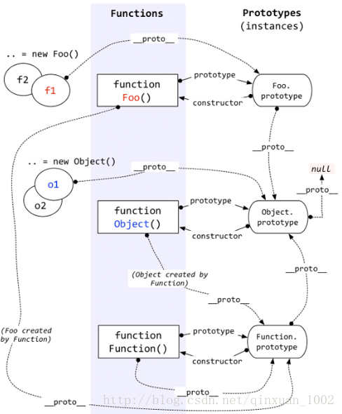

undefined, number, string, boolean属于简单的值类型，不是对象。剩下的几种情况——函数、数组、对象、null、new Number(10)都是对象。他们都是引用类型。
typeof
console.log(typeof (x)); // 'undefined'
console.log(typeof (10)); // 'number'
console.log(typeof ('abc')); // 'string'
console.log(typeof (true)); // 'boolean'
console.log(typeof (function () { })); // 'function'
console.log(typeof ([1, 'dsa', true])); // 'object'
console.log(typeof ({ a: 123, b: true })); // 'object'
console.log(typeof (null)); // 'object'
console.log(typeof (new Number(0))); // 'object'
console.log(typeof(new Date())); // 'object'
console.log(typeof(/a/g)); // 'object'我们可以用typeof判断一个变量是否存在
if(typeof a !=='undefined'){
alert('OK')
}而不是if(a)这样的用法，因为如果这样a为定义就会报错。
简单的值类型直接用typeof就能够判断出来
但是引用类型使用 typeof 判断就不太准确。如上代码所示，例如数组，正则表达式，日期，对象等typeof返回值都是为 object 函数的返回值则是function
在 JavaScript 中，判断一个变量的类型尝尝会用 typeof 运算符，在使用 typeof 运算符时采用引用类型存储值会出现一个问题，无论引用的是什么类型的对象，它都返回 “object”。这就需要用到instanceof来检测某个对象是不是另一个对象的实例。
instanceof
语法：object instanceof constructor参数：object（要检测的对象.）constructor（某个构造函数）
描述：instanceof运算符用来检测constructor.prototype是否存在于参数object的原型链上
对象与函数的关系： 函数是一种对象，但函数不像数组正则日期这些对象。其他的对象（函数除外）都是对象的一个子集，但是函数却可以创造出对象来
function People(){
this.name = 'hello world';
this.birth - 1998;
}
var people = new People();people这个对象是由People的构造函数创建出来的，
instanceof的使用规则：A instanceof B
A沿着proto这条线来找，同时B沿着prototype这条线来找，如果两条线能找到同一个引用，即同一个对象，那么就返回true。如果找到终点还未重合，则返回false。

例如：
可以用于判断一个变量是否是某个对象的实例
console.log(people instanceof People); // trueconsole.log(people instanceof Object); // true因为people是由 People构造函数搞出来的，而People又是object的子类
可以在继承关系中用来判断一个实例是否属于它的父类型
例如：
function People() {
this.name = 'hello world';
this.birth = 1998;
}
function Male(){}
Male.prototype = new People();
const man = new Male();
console.log(man instanceof Male); // true
console.log(man instanceof People); // true又如：
// 定义构造函数
function C(){}
function D(){}
var o = new C();
// true，因为 Object.getPrototypeOf(o) === C.prototype
o instanceof C;
// false，因为 D.prototype不在o的原型链上
o instanceof D;
o instanceof Object; // true,因为Object.prototype.isPrototypeOf(o)返回true
C.prototype instanceof Object // true,同上
C.prototype = {};
var o2 = new C();
o2 instanceof C; // true
o instanceof C; // false,C.prototype指向了一个空对象,这个空对象不在o的原型链上.
D.prototype = new C(); // 继承
var o3 = new D();
o3 instanceof D; // true
o3 instanceof C; // true需要注意的是，如果表达式 obj instanceof Foo 返回true，则并不意味着该表达式会永远返回true，因为Foo.prototype属性的值有可能会改变，改变之后的值很有可能不存在于obj的原型链上，这时原表达式的值就会成为false。另外一种情况下，原表达式的值也会改变，就是改变对象obj的原型链的情况，虽然在目前的ES规范中，我们只能读取对象的原型而不能改变它，但借助于非标准的__proto__魔法属性，是可以实现的。比如执行obj.__proto__ = {}之后，obj instanceof Foo就会返回false了。
function People(){
this.name = 'hello'
}
const a = new People();
console.log(a instanceof People); // true
a.__proto__ = {};
console.log(a instanceof People); // false